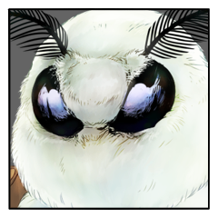

キャラクター紹介
GM
特に個別の導入シーン、というのを想定したシナリオではないため、先に全員のキャラ紹介を行います。
GM
というわけで、PC1からやっていきましょう。
GMからHOを開示し、キャラクターシートを公開致します。
そこから各々紹介をお願いします。
PC1 葦原 名張
GM
【PC1 導入】
あなたは50年に1度、比良坂機関の下に執り行われる国守の儀式『神楽八十神追』の担い手として生まれ、研鑽してきた。配役は『八千矛』。国を造りし武神として、国に仇をなす『八十神を討ち、世界を守ること』が使命だ。
【使命】
八十神を討ち、世界を守る。
葦原 名張
「俺の名前は葦原 名張（アシハラ ナバリ）。見ての通りの、まぁ鞍馬神流の男だ」
葦原 名張
「うちは代々『神楽八十神』の担い手の家系でね。俺で何代目になるかはわすれちまったが、ずーっと国のために大事なお役目をしてきたってことだな」
葦原 名張
「一子相伝なんてうたっちゃあいるが……実際のところ兄弟姉妹の中で一番強いやつが受け継ぐことができる役目なんだ」
葦原 名張
「当然俺も兄弟姉妹を全員倒してこの役目を担ってるんだから、儀式は絶対成功させるし、させて当たり前なんだよ」
葦原 名張
「……死んでいった兄弟姉妹のためにもな」
葦原 名張
「……なぁーんて、そんなことはないぜ。別に兄弟姉妹で殺し合いもしてないし、俺は高校だって出てるし、こう見えてまだ22だ」
葦原 名張
「今どきそんなことしてられないだろ？いくら忍だからって」
葦原 名張
「俺が一番強いってのは本当だけどさ。この格好も髭も、親父がお前には貫禄がないからってやれってうるさかったんだよな」
葦原 名張
「まぁこんなんだけどさ、やることはきっちりやって、儀式は完成させないとな。25までに嫁さんみつけないとなんないし」
葦原 名張
「こんなところか？それともなんだ、好きな食べ物とか言った方がいいのか？」
葦原 名張
「俺ぁ焼いた肉が好きだな。牛でも豚でも鳥でも羊でも。焼肉の食べ放題とか何度行っても飽きないね」
GM
野性的な健啖家でいらっしゃる！ ありがとうございます。
PC2 三榊 琴梨
GM
【PC2 導入】
あなたは50年に1度の国守の儀式『神楽八十神追』を執り行う巫女として生まれ、この日に向けて準備してきた。配役は『姫君』。冥府に住まう姫君として、『八千矛に神器を与えること』が使命だ。
【使命】
八千矛に神器を与える。
GM
https://character-sheets.appspot.com/shinobigami/edit.html?key=ahVzfmNoYXJhY3Rlci1zaGVldHMtbXByFwsSDUNoYXJhY3RlckRhdGEYoZ2l3gQM
三榊 琴梨
「三榊 琴梨（ミサカキ コトリ）と申します」
三榊 琴梨
「『神楽八十神追』の『姫君』を拝命しております」
三榊 琴梨
「幼き日より、この御役目のため精進して参りました」
三榊 琴梨
「不束者ですが、何卒よろしくお願い申し上げます」
三榊 琴梨
少し考え込むような間が空いて、はにかむ。
三榊 琴梨
「もちろん、儀式の完遂、そのためにわたくしは生きて参りました」
GM
飲みたいメニューなどは決まっているのでしょうか？
三榊 琴梨
「すたあばっくすのふらぺちいの……持ってきていただいて、飲んだことはあるんですけれど」
三榊 琴梨
「お店で飲んだら、なんだか違う気がするのです」
三榊 琴梨
「わたくし、あまり外に出たことが無いものですから……」
三榊 琴梨
「他にも見てみたいもの、色々ありますね」
GM
そのためにもまずは儀式の完遂ですね。
姫君のお務め、頑張ってください。
三榊 琴梨
「はい。力の限り、務めさせていただきます」
PC3 爾甁粢 野葛
GM
【PC3 導入】
あなたは比良坂機関の監視下に置かれ、ある程度の自由を保証される代わりに、50年に1度、最も力のある者を儀式『神楽八十神追』に差し出すことを義務付けられた隠忍の血族の里、堅洲の里に育った。あなたはその儀式に選ばれ、『八十神』の配役を与えられた。国に背きしまつろわぬものとして、八千矛に討たれることを宿命づけられている。
しかしただ討たれるばかりではない。抵抗は認められている。あなたが八千矛を返り討ちにすれば、儀式によって維持される現シノビガミの力を砕き、まつろわぬものの時代を築くことができるだろう。あなたの使命は『八千矛を討ち、世界を変えること』だ。
【使命】
八千矛を討ち、世界を変える。
GM
https://character-sheets.appspot.com/shinobigami/edit.html?key=ahVzfmNoYXJhY3Rlci1zaGVldHMtbXByFwsSDUNoYXJhY3RlckRhdGEYibKU6gQM

爾甁粢 野葛
「……爾甁粢 野葛（ニヘイモチ ヤカツ）。」
爾甁粢 野葛
「この度、『八十神』の役を与えられた者だ。
普段は山で獣を追って暮らしている。」
爾甁粢 野葛
「……堅洲の里は、長らく斜陽の中に漂い続けている。
継承する忍びの技にも、陰りが見えるほどに。」
爾甁粢 野葛
「俺が儀式に選ばれたのも……
里で最も弓の扱いが上手く、獲物の扱いに熟達しているから。
恐らくは、それだけのことに過ぎない。」
爾甁粢 野葛
「……堅洲の里では、形ばかりだが養蚕が認められている。
この装束は儀式に臨むに当たり、里の者たちに指示して織らせた物だ。」
爾甁粢 野葛
「己の力に酔い痴れて、
驕り昂り軽々に表情を晒し、考えを読まれる愚は犯さない。
俺は先人たちの轍を踏むつもりは更々ない。」
爾甁粢 野葛
「――ああ、しかし頭痛がする。
頭の芯が削られるような痛みだ。」
爾甁粢 野葛
「…問題ない。
儀式の在り方を推察し、その本質を掴むべく考え抜いた。
勝つべくして勝つだけだ。何の憂いも無い――」
爾甁粢 野葛
「来るがいい、殺戮を恐れぬ狼藉者どもめ。
お前たちが定めた道理を、逆しまにしてみせよう。」
爾甁粢 野葛
「……冬は苦手だ。
草木と…虫ばかりが賑わう春も。」
PC4 百々坂 瞠
GM
【PC4 導入】
あなたはPC1またはPC2（両方でもよい）と身近な存在だ。国の存続に関わる重要な儀式の担い手を隣で支えてきた。儀式『神楽八十神追』においての配役はない。儀式の開始をもって、あとは儀式の完遂を待ち見守るだけの立場のはずなのだが、開始と共にあなたもまた堅洲の里に召喚された。里は儀式完遂まで閉ざされ、開くことは許されない。あなたの使命は観客として、『儀式が完遂するのを見守ること』だ。
【使命】
儀式が完遂するのを見守る。
GM
https://character-sheets.appspot.com/shinobigami/edit.html?key=ahVzfmNoYXJhY3Rlci1zaGVldHMtbXByFwsSDUNoYXJhY3RlckRhdGEY6IGizwQM
百々坂 瞠
「比良坂機関、第九中忍部隊、二番の一。百々坂瞠（トウドウザカ ミハリ）」
百々坂 瞠
「百々坂の名か、私の名か。耳にしたことがあるかもしれないな。
皆、奇妙な尾ひれをつけたがる」
百々坂 瞠
「戦国の世に名を馳せた忍びの生まれ変わり、
秘術にて魂を未来へ飛ばした術者の再来」
百々坂 瞠
「……何、すべて噂だ。妹とのこともな」
百々坂 瞠
「比良坂機関の諜報技術はそうして鍛えられるものだ。好きにさせているさ。
後進の礎にはなるものだろう？」
百々坂 瞠
「配役？
いや、私は『神楽八十神追』に直接の関係はない」
百々坂 瞠
「ただつつがない儀の成就のために、姫君……琴梨を守ってきたというだけだ」
百々坂 瞠
「その役目も、もう終わりだ。私は新たな任務を賜るだろう」
百々坂 瞠
「できれば、いくらか休みの取れるものがいいな。琴梨が……」
百々坂 瞠
「いや。その時には、あの子は私以外の誰かを得るべきだ」
百々坂 瞠
「好きな飲み物？ 緑茶が一番慣れているな。
目覚ましにもなる。脱水に気をつければ長期の忍務には最適だ」
百々坂 瞠
「毒見がなければ、あんなに色々なものの味を知ることもなかったろうな」
百々坂 瞠
「なに、こちらの話だ。気にしないでくれ」
GM
ありがとうございます。人生とは数奇なるもの。
GM
――神楽の果てに昇る日は、誰がためのものか。
導入フェイズ
GM
現シノビガミの力を維持し、現世を人のものとする儀式――神楽八十神追。
GM
比良坂機関の下に執り行われる国守のその儀式が今宵、執り行われようとしていた。
GM
しかし今宵は、そこに住まう者のすがたはない――一人を除いて。
GM
月明かりはなく、焚かれた灯火が音を立てて爆ぜる。
GM
祭壇に並ぶは鞍馬神流、比良坂機関の無数の忍たち。
GM
祝詞が読み上げられる中、二人の忍が前に出る。
GM
二人を前に、勝利を祈祷する演舞が執り行われ。
GM
そして、遅れて出でた隠忍の血統の忍が、祭壇へと向かう。
GM
この堅洲の里において、最も力のある者として選ばれた忍。
GM
一方、その彼らを、人々の中で見守る忍が一人。
GM
祝詞が読み終わると、一つ一つ、祭壇の上で煌々と燃える灯火が消えていく。
GM
忍の超常的な視野ですら、わずかな光明も見いだせぬ暗闇に包まれる。
GM
そして、あり得べくもなき、役なきものが一人。
GM
それぞれが祭壇に立ち、お互いを見合っている。